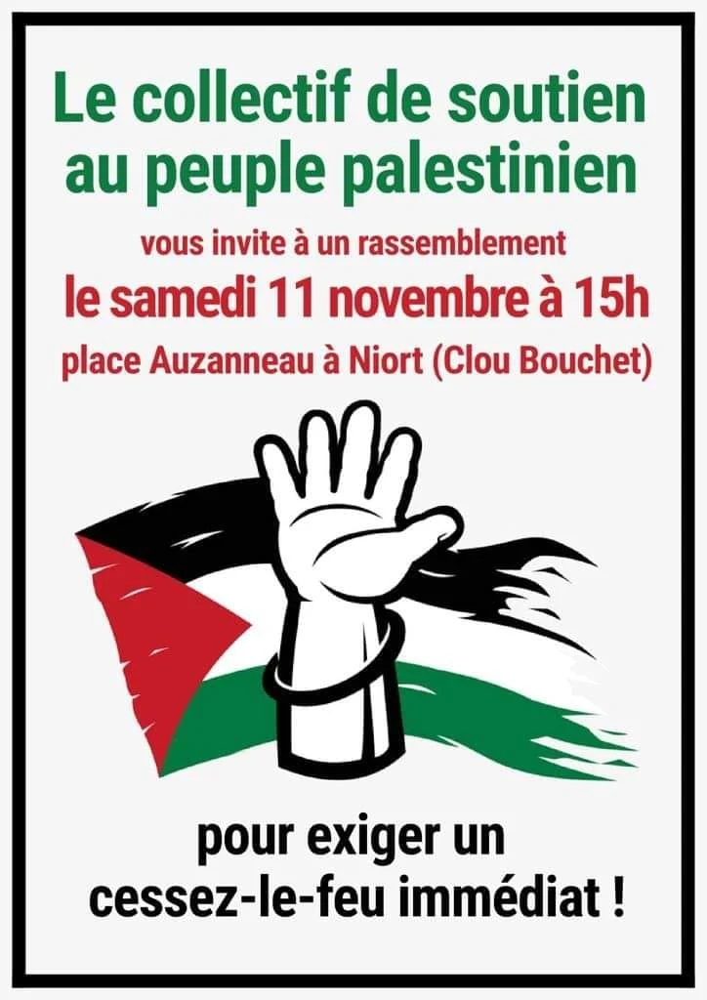

Appel archivé
Au Clou-Bouchet, appel à un cessez-le-feu immédiat le 11 novembre 2023
Date indiquée par Facebook · 11 novembre 2023
Repères éditoriaux
Le collectif de soutien au peuple palestinien donnait rendez-vous le samedi 11 novembre 2023 à 15 h, place Auzanneau à Niort, pour exiger un cessez-le-feu immédiat. Nous avons relayé cet appel.

Sources
Archive rouge · document diffusé sur Facebook · AR-0002-FB-01543
À lire aussi · Gaza. Appel à Niort pour un cessez-le-feu immédiat le 17 février 2024